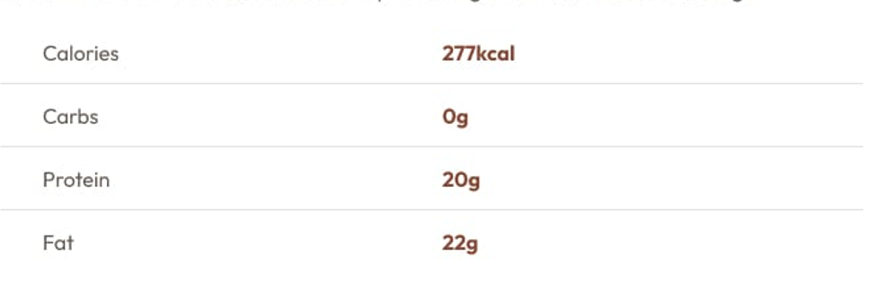

Receita Omelete Simple
Um prefeito fácil e rápido para qualquer refeição. Esta omelete de classe combina ovos batidos cozidos até a preferência, opcionalmente recheados com queijo, vegetais ou carnes de sua escolha.
Tempo peparado
- Total: Aproximado 10 minutos.
- Preparação: 5 minutos.
- Cozinhar: 5 minutos.
Ingredientes
- 2-3 ovos grandes.
- Sal, a gosto.
- Pimenta, a gosto.
- 1 colher de sopa de manteiga ou azeite.
- Recheios Opiton: queijo, legumes em cubos, carnes cozidas, ervas.
Instruções
-
Bata os ovos: Em uma tigela, bata os ovos com uma pitada de sal e pimenta até estarem bem misturados. Você pode adicionar uma colher de sopa de água ou leite para uma textura mais macia.
-
Aqueça a frigideira: Coloque uma frigideira antiaderente em fogo médio e adicione manteiga ou óleo.
-
Cozinhe a omelete: Assim que a manteiga derreter e começar a borbulhar, despeje os ovos na frigideira. Incline a frigideira para garantir que os ovos cubram uniformemente a superfície.
-
Adicione recheios (opcional): Quando os ovos começarem a firmar nas bordas, mas ainda estiverem um pouco moles no meio, espalhe os recheios escolhidos sobre metade da omelete.
-
Dobre e sirva: Enquanto a omelete continua a cozinhar, levante cuidadosamente uma das bordas e dobre sobre os recheios. Deixe cozinhar por mais um minuto e, em seguida, deslize-a para um prato.
-
Aproveite: Sirva quente, com sal e pimenta adicionais, se necessário.
Nutrição
A tabela abaixo mostra os valores nutricionais por porção, sem os recheios adicionais:
